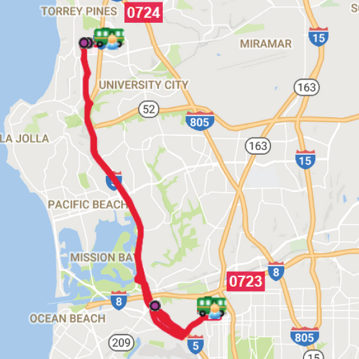

Hillcrest/Campus
Shuttle stops
- Thornton Hospital, La Jolla: Campus Point transit stop
-
Campus:
- Gilman Transit Center—northbound service only
- Gilman/ Mandeville Lane—southbound service only
- Old Town Transit Center: Passenger loading zone on Congress Street, next to transit terminal
- UC San Diego Medical Center, Hillcrest: West of the Arbor Drive hospital entrance
Rout Map

Time Table
Southbound to Hillcrest Medical Center Schedule
| La Jolla Medical Center | Gilman/Mandeville Lane | Old Town Transit Center |
|---|---|---|
| 5:50 a.m. | 5:55 a.m. | 6:15 a.m. |
| 6:20 a.m. | 6:25 a.m. | 6:45 a.m. |
| 6:50 a.m. | 6:55 a.m. | 7:15 a.m. |
| 7:20 a.m. | 7:25 a.m. | 7:45 a.m. |
| 7:50 a.m. | 7:55 a.m. | 8:15 a.m. |
| 8:20 a.m. | 8:25 a.m. | 8:45 a.m. |
| 8:50 a.m. | 8:55 a.m. | 9:15 a.m. |
| 9:20 a.m. | 9:25 a.m. | 9:45 a.m. |
| 9:50 a.m. | 9:55 a.m. | 10:15 a.m. |
| 10:20 a.m. | 10:25 a.m. | 10:45 a.m. |
| 10:50 a.m. | 10:55 a.m. | 11:15 a.m. |
| 11:20 a.m. | 11:25 a.m. | 11:45 a.m. |
| 11:45 a.m. | 11:50 a.m. | |
| 12:15 p.m. | 12:20 p.m. | |
| 12:45 p.m. | 12:50 p.m. | |
| 1:15 p.m. | 1:20 p.m. | |
| 1:45 p.m. | 1:50 p.m. | |
| 2:15 p.m. | 2:20 p.m. | |
| 2:45 p.m. | 2:50 p.m. | |
| 3:15 p.m. | 3:20 p.m. | |
| 3:45 p.m. | 3:50 p.m. | |
| 4:15 p.m. | 4:20 p.m. | |
| 4:45 p.m. | 4:50 p.m. | |
| 5:15 p.m. | 5:20 p.m. | |
| 5:45 p.m. | 5:50 p.m. | |
| 6:15 p.m. | 6:20 p.m. | |
| 6:45 p.m. | 6:50 p.m. | |
| 7:15 p.m. | 7:20 p.m. | |
| 7:45 p.m. | 7:50 p.m. | |
| 8:45 p.m. | 8:50 p.m. |
Northbound to La Jolla Medical Center Schedule
| Hillcrest Medical Center | Old Town Transit Center | Gilman Transit Center |
|---|---|---|
| 6:30 a.m. | 6:50 a.m. | |
| 7 a.m. | 7:20 a.m. | |
| 7:30 a.m. | 7:50 a.m. | |
| 8 a.m. | 8:20 a.m. | |
| 8:30 a.m. | 8:50 a.m. | |
| 9 a.m. | 9:20 a.m. | |
| 9:30 a.m. | 9:50 a.m. | |
| 10 a.m. | 10:20 a.m. | |
| 10:30 a.m. | 10:50 a.m. | |
| 11 a.m. | 11:20 a.m. | |
| 11:30 a.m. | 11:50 a.m. | |
| Noon | 12:15 p.m. | 12:30 p.m. |
| 12:30 p.m. | 12:45 p.m. | 1 p.m. |
| 1 p.m. | 1:15 p.m. | 1:30 p.m. |
| 1:30 p.m. | 1:45 p.m. | 2 p.m. |
| 2 p.m. | 2:15 p.m. | 2:30 p.m. |
| 2:30 p.m. | 2:45 p.m. | 3 p.m. |
| 3 p.m. | 3:15 p.m. | 3:30 p.m. |
| 3:30 p.m. | 3:45 p.m. | 4 p.m. |
| 4 p.m. | 4:15 p.m. | 4:30 p.m. |
| 4:30 p.m. | 4:45 p.m. | 5 p.m. |
| 5 p.m. | 5:15 p.m. | 5:30 p.m. |
| 5:30 p.m. | 5:45 p.m. | 6 p.m. |
| 6 p.m. | 6:15 p.m. | 6:30 p.m. |
| 6:30 p.m. | 6:45 p.m. | 7 p.m. |
| 7 p.m. | 7:15 p.m. | 7:30 p.m. |
| 7:30 p.m. | 7:45 p.m. | 8 p.m. |
| 8 p.m. | 8:15 p.m. | 8:30 p.m. |
| 8:30 p.m. | 8:50 p.m. | |
| 9:15 p.m. | 9:35 p.m. |